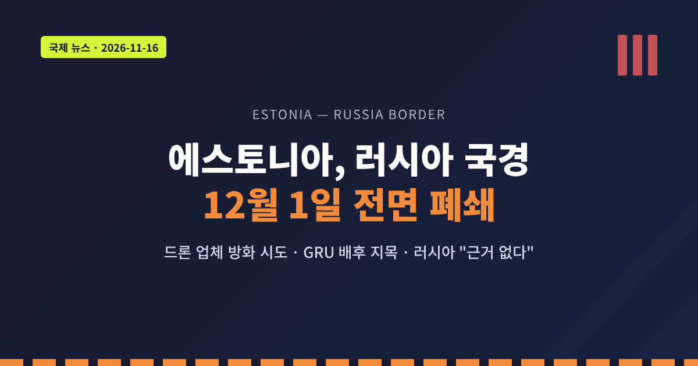
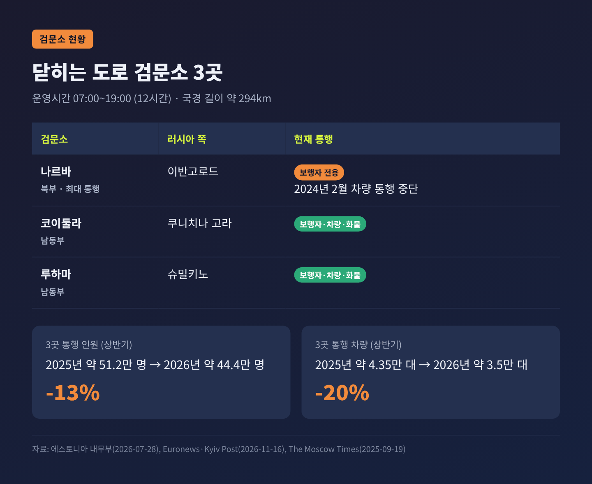
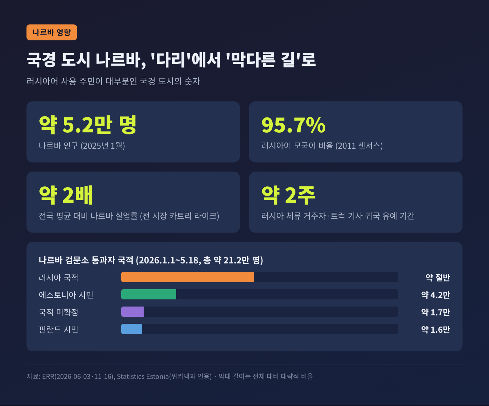
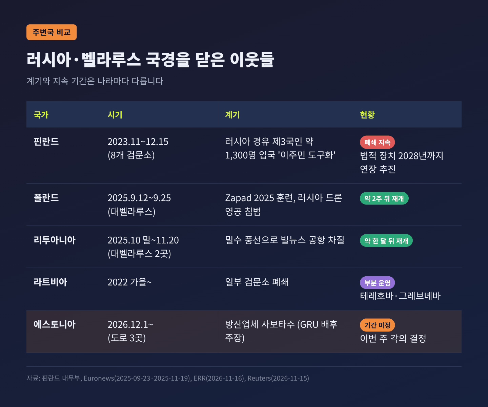
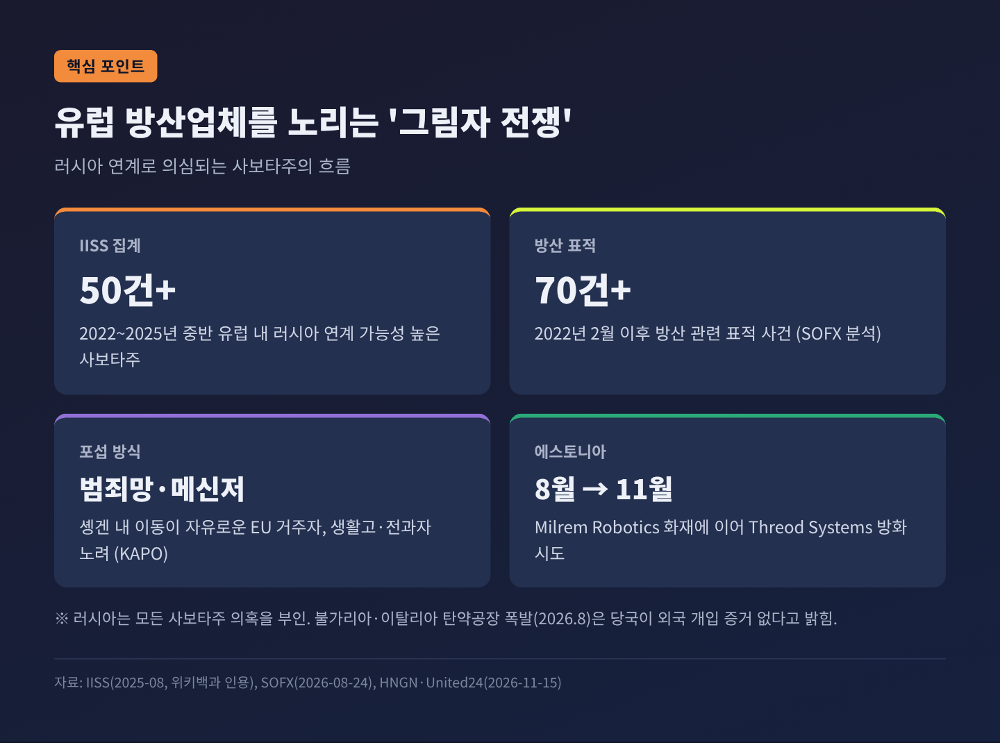

에스토니아 러시아 국경 폐쇄, 드론 업체 방화 시도가 부른 12월 봉쇄

이번 글에서는 에스토니아가 12월 1일부터 러시아와 맞닿은 국경 검문소를 모두 닫기로 한 결정을 정리해 보겠습니다. 계기는 드론 업체 Threod Systems를 노린 방화·폭발 시도였고, 에스토니아는 러시아 군정보기관(GRU)을 배후로 지목했습니다. 러시아는 "근거 없다"며 전면 부인하고 있습니다.
3줄 요약
- 11월 14일 새벽 탈린 인근 드론 업체 Threod Systems에서 방화·폭발 시도가 저지됐고, 라트비아 거주자 8명이 구금됐습니다.
- 에스토니아 외무장관은 12월 1일부터 나르바·코이둘라·루하마 도로 검문소를 모두 닫겠다고 밝혔습니다. 한시적일지 무기한일지는 이번 주 각의가 정합니다.
- 러시아 외무부는 "러시아 혐오", 크렘린은 "근거 없는 비난"이라고 반발했습니다. 배후 판단의 증거는 아직 공개되지 않았습니다.
■ 새벽 3시 6분, 비임시에서 무슨 일이 있었나
사건은 11월 14일 토요일 새벽 3시 6분경 일어났습니다. 장소는 수도 탈린 북쪽 비임시(Viimsi)에 있는 Threod Systems 부지입니다. 이 회사는 장거리 정찰·공격 드론을 만들고, 우크라이나에도 장비를 공급합니다. 영국 국방부가 육군 드론 프로그램에 이 회사 사출 장비를 선정했을 만큼 이름이 알려진 업체입니다.
에스토니아 당국 발표에 따르면 용의자들은 창문을 깨고 인화성 액체를 부어 화재와 폭발을 일으키려 했습니다. 회사 보안요원이 먼저 개입해 큰 피해는 막았습니다. 다친 사람은 없었고, 국가보안국(KAPO)은 생산·물류에 지장이 없다고 밝혔습니다.
구금된 사람은 8명이며 모두 라트비아에 거주합니다. 국적 표기는 매체마다 엇갈립니다. ERR는 "라트비아 시민 8명"으로, 일부 매체는 "시민 4명과 비시민 4명"으로 보도했습니다. 라트비아 내무장관도 "시민과 비시민 여럿"이라고만 말했습니다. 검찰은 이 가운데 5명에 대해 구속을 청구했습니다.
라트비아 국가보안국(VDD)의 역할도 컸습니다. VDD는 13~14일 위험 정보를 입수해 에스토니아에 넘겼고, 라트비아 안 9곳을 압수수색해 폭발물·불꽃류·탄약과 휴대전화 여러 대를 확보했다고 밝혔습니다.
■ 확인된 사실과 '주장'은 구분해서 봐야 합니다
배후에 대해서는 양측 말이 정면으로 부딪칩니다.
에스토니아 측 주장은 이렇습니다. KAPO 국장 마르고 팔로손은 방첩 정보로 러시아 연루를 확인했고 GRU가 작전을 조율했다고 밝혔습니다. 외무장관 마르구스 차크나는 GRU 개입의 "명백한 증거"가 있다고 했습니다. 크리스텐 미할(Kristen Michal) 총리는 이번 일을 "유럽을 겨냥한 러시아의 광범위한 하이브리드 전쟁의 일부"로 규정했습니다.
러시아 측 입장은 정반대입니다. 크렘린 대변인 드미트리 페스코프는 비난이 "전적으로 근거 없다"며 "받아들이지 않고 전면 거부한다"고 말했습니다. 외무부 대변인 마리야 자하로바는 국경 폐쇄 계획이 사실이라면 "또 한 번의 공격적이고 억제되지 않은 러시아 혐오"라고 했습니다.
현재까지 확인된 것은 '방화 시도가 있었고, 8명이 구금됐다'는 사실입니다. GRU 지시라는 판단은 에스토니아 정보당국의 결론이며, 증거는 공개되지 않았고 독립적으로 검증된 바도 없습니다. 재판 과정에서 무엇이 드러나는지 지켜볼 필요가 있습니다.
다만 이번이 처음은 아닙니다. 지난 8월 15일에는 탈린의 무인지상차량 업체 Milrem Robotics 건물에 불이 났고, 라트비아에서 3명이 붙잡혀 인도됐습니다. KAPO는 9월 말 이 사건도 러시아 특수기관 소행이라고 발표했고, 크렘린은 그때도 "근거 없다"고 부인했습니다.
■ 닫히는 문은 세 곳, 통행량은 반년에 44만 명
에스토니아와 러시아의 국경은 약 294km입니다. 지금 열려 있는 도로 검문소는 북쪽 나르바, 남쪽 코이둘라와 루하마 세 곳뿐입니다. 모두 오전 7시부터 오후 7시까지 12시간만 운영합니다.
이 가운데 가장 붐비는 나르바는 이미 보행자 전용입니다. 러시아가 2024년 2월 맞은편 이반고로드 차량 터미널 재건축을 이유로 차량 통행을 멈췄고, 에스토니아는 "우크라이나 전쟁이 끝날 때까지 차량 통행 재개는 없다"는 입장을 굳혔습니다. 차량과 화물은 남쪽 두 곳으로만 다녀 왔습니다.
에스토니아 내무부 통계를 보면 흐름이 분명합니다. 세 검문소를 오간 사람은 2025년 상반기 약 51만 2,000명에서 2026년 상반기 약 44만 4,000명으로 13% 줄었습니다. 차량은 약 4만 3,500대에서 약 3만 5,000대로 20% 감소했습니다.
예전엔 러시아로 가는 몇 안 되는 육로였습니다. 지금은 점점 좁아지는 바늘구멍입니다. 내무장관 이고르 타로는 올여름 이미 "전면전 이전보다 통행을 90% 줄였다"고 말한 바 있습니다.

■ 나르바 주민에게는 '가족 방문 길'이 끊기는 일입니다
폐쇄의 무게가 가장 무겁게 실리는 곳은 국경 도시 나르바입니다. 인구 약 5만 2,000명 가운데 러시아어를 모국어로 쓰는 주민이 95%를 넘습니다. 강 하나 건너 이반고로드에 가족을 둔 집이 많습니다.
나르바 검문소만 놓고 보면 올해 1월 1일부터 5월 18일까지 약 21만 2,000명이 오갔습니다. 그중 거의 절반이 러시아 국적자였고, 에스토니아 시민이 약 4만 2,000명, 국적 미확정자가 약 1만 7,000명이었습니다. 러시아 국적이거나 국적이 정해지지 않은 주민이 적지 않은 도시라는 점이 이 숫자에 그대로 묻어납니다.
전 나르바 시장 카트리 라이크는 발표 당일 저녁 많은 가정이 러시아에 사는 노부모와 자녀, 손주를 어떻게 만나야 할지 이야기했다고 전했습니다. 그는 "나르바는 더 이상 다리 도시가 아니라 막다른 길"이라고 적었습니다. 나르바 실업률이 이미 전국 평균의 두 배 수준인데, 국경 대기 관련 일감과 관광 수입마저 사라질 것이라는 우려입니다.
국경 대기열을 관리하는 시영 회사는 2024년 차량 통행 중단 이후 이미 경영난을 겪어, 올해 5만 유로·내년 10만 유로 지원을 시에 요청한 상태였습니다. 물류 측면에서도 남쪽 두 검문소를 지나던 화물이 끊깁니다. 정부는 러시아에 있는 에스토니아 거주자와 트럭 기사에게 약 2주 안에 돌아오라고 안내했습니다.

■ 핀란드·폴란드·리투아니아는 어떻게 했나
국경을 닫은 이웃은 에스토니아가 처음이 아닙니다. 다만 계기와 지속 기간은 제각각입니다.
핀란드는 2023년 11월부터 단계적으로 닫아 12월 15일 8개 도로 검문소를 모두 봉쇄했습니다. 러시아를 거쳐 무비자로 넘어온 제3국인이 그해 8~12월 약 1,300명에 이르자, 러시아가 이주민을 '도구화'한다고 판단한 것입니다. 이 폐쇄는 3년 가까이 이어지고 있고, 핀란드 정부는 관련 법적 장치를 2028년 말까지 연장하자는 안을 내놓았습니다.
폴란드는 2025년 9월 12일 러시아·벨라루스 합동훈련과 러시아 드론의 영공 침범 직후 벨라루스 국경을 모두 닫았다가 약 2주 만에 다시 열었습니다. 리투아니아는 밀수 풍선이 빌뉴스 공항 운항을 방해하자 2025년 10월 말 벨라루스 검문소 두 곳을 닫았고, 한 달가량 뒤 재개했습니다. 라트비아는 2022년 가을부터 일부 검문소를 닫았지만 테레호바·그레브녜바는 아직 운영 중입니다.
에스토니아의 경우는 결이 다릅니다. 이주민 압박이나 한시적 군사훈련이 아니라, 자국 방산시설을 겨냥한 사보타주에 대한 대응으로 국경 카드를 꺼냈습니다. 의회 외교위원장 마르코 미흐켈손이 말한 "비대칭 조치"라는 표현이 이 차이를 잘 보여줍니다.

■ 유럽 방산업체를 노리는 '그림자 전쟁'
이번 사건은 유럽 전역에서 이어지는 사보타주 흐름 위에 놓여 있습니다. 국제전략문제연구소(IISS)는 2022년부터 2025년 중반까지 러시아 연계 가능성이 높은 사보타주를 50건 넘게 집계했습니다. 방산 관련 표적만 70건이 넘는다는 분석도 있습니다.
2025년 6월 독일 에어푸르트에서는 라인메탈 군용 트럭이 불탔고, 2026년 9월에는 루마니아 국영 방산업체 시설 화재가 러시아 조율 네트워크와 연결됐다는 발표가 나왔습니다. 리투아니아는 우크라이나 공급업체 방화 미수 사건으로 다국적 6명을 기소하며 "러시아에 사는 집단이 지시했다"고 밝혔습니다. 반대로 같은 시기 불가리아·이탈리아 탄약 공장 폭발은 당국이 외국 개입 증거가 없다고 했습니다. 모든 사고를 한 줄로 엮는 것은 경계해야 합니다.
눈여겨볼 대목은 포섭 방식입니다. KAPO는 GRU가 솅겐 지역을 자유롭게 다니는 EU 거주자, 특히 범죄 이력이 있거나 생활고에 처한 사람을 노린다고 설명합니다. 메신저로 '일자리'를 제안하는 식이어서, KAPO는 "러시아발 그런 제안은 고려조차 하지 말라"고 경고했습니다.
NATO는 9월 말 Milrem 사건 뒤 마르크 뤼터 사무총장이 "침착하게, 계속하라, 우크라이나를 지원하라"고 말한 바 있습니다. 이번 Threod 사건에 대한 NATO의 별도 공식 성명은 아직 확인되지 않았습니다. EU 외교장관들은 16일 브뤼셀에서 113건의 신규 대러 제재 지정에 합의할 예정이었고, 차크나 장관은 이 자리에서 제재·비자 정책 강화를 요구하겠다고 밝혔습니다.

■ 평화협상 테이블과 국경 봉쇄는 따로 움직입니다
시점도 묘합니다. 11월 10~11일 아부다비에서 미국 중재로 9개월 만에 미·우·러 협상이 열렸습니다. 대규모 포로 교환에는 원칙적으로 합의했지만, 돈바스 철수 요구와 휴전 문제에서는 돌파구가 없었습니다.
에스토니아는 이 국면에서도 압박을 늦추지 않겠다는 쪽입니다. 미할 총리는 이번 공격이 우크라이나 지원을 줄이고 러시아에 대한 압박을 완화하려는 목적이라고 주장했습니다. 차크나 장관은 러시아가 전쟁을 끝내고 책임을 질 때까지 제재·외교적 고립·이동 제한을 이어가겠다고 했습니다.
협상이 진행될수록 '긴장 완화'를 바라는 목소리와 '압박 유지'를 주장하는 최전선 국가들의 온도 차는 더 드러날 수 있습니다. 에스토니아의 국경 봉쇄는 그 온도 차를 보여주는 하나의 신호로 읽힙니다.
■ 법적 근거와 인도적 예외, 아직 빈칸이 많습니다
절차상으로는 내무장관이 폐쇄안을 내고 정부가 각의에서 결정합니다. 외무부가 '12월 1일'을 먼저 발표했지만, 한시적일지 무기한일지는 이번 주 결정입니다. 미할 총리는 현지 언론 인터뷰에서 무기한 폐쇄를 제안했고, 국경수비대가 폐쇄 후 있을 수 있는 이주민 유입에도 대비하고 있다고 말했습니다.
인도적 예외는 아직 발표되지 않았습니다. 현행 체제에서는 러시아 국적자도 인도적 사유의 "매우 긴급한 필요"가 있으면 예외적으로 들어올 수 있었습니다. 12월 이후 자국민 귀국, 장례·병문안 같은 가족 사정, 망명 신청을 어떻게 다룰지는 정해지지 않았습니다. 핀란드가 폐쇄 중에도 '특히 취약한 사람의 권리'를 고려한다고 명시한 것과 비교하면, 에스토니아가 채워야 할 빈칸입니다.
■ 앞으로 지켜볼 세 가지
첫째, 각의 결정입니다. 기간이 정해지는지, 무기한인지에 따라 나르바 주민의 계획이 달라집니다. 둘째, 재개 조건입니다. 에스토니아는 이미 나르바 차량 통행을 '전쟁 종식' 이후로 미뤄 두었습니다. 같은 잣대가 전면 폐쇄에도 적용될 가능성이 큽니다. 셋째, 러시아의 대응입니다. 지금은 말로 반발하는 단계이지만, 러시아는 지난 7월 에스토니아·라트비아·핀란드와의 철도 검문소 일부를 일방적으로 멈춘 전례가 있습니다.
좋은 점과 아쉬운 점은 함께 봐야 합니다. 에스토니아 정부는 러시아 정보기관이 국경 통과자를 포섭·공작에 쓰는 통로를 줄일 수 있다고 봅니다. 반면 전 내무장관 라우리 라네메츠는 전면 폐쇄가 안보 문제를 풀지 못하고 지역 주민만 힘들게 한다며 반대한 적이 있습니다. 두 주장 모두 일리가 있고, 어느 쪽이 맞을지는 시간이 말해 줄 것입니다.
정리하면 이렇습니다. 에스토니아는 방산업체를 겨냥한 사보타주에 국경이라는 가장 무거운 카드로 답했습니다. 그 대가는 정부가 아니라 국경 너머에 가족을 둔 나르바 주민들이 먼저 치르게 됩니다.
"안보의 문을 닫는 일과 사람의 길을 남겨 두는 일은 함께 설계돼야 합니다."
국경이 다시 열리느냐고 물으신다면, 그 답은 아부다비의 협상 테이블보다 전선의 끝에서 먼저 나올 것 같습니다.
출처
- ERR News, "Estonia to close border crossings with Russia after GRU-linked sabotage attacks" (2026-11-15) — https://news.err.ee/1610196794/estonia-to-close-border-crossings-with-russia-after-gru-linked-sabotage-attacks
- ERR News, "Estonia's proposed eastern border closures are 'Russophobia,' Russian MFA says" (2026-11-16) — https://news.err.ee/1610197091/estonia-s-proposed-eastern-border-closures-are-russophobia-russian-mfa-says
- ERR News, "Former mayor: Closure of Estonia-Russia border a painful blow for Narva" (2026-11-16) — https://news.err.ee/1610197270/former-mayor-closure-of-estonia-russia-border-a-painful-blow-for-narva
- Reuters, "Estonia to close Russian border crossings after attempted arson attack" (2026-11-15) — https://www.yahoo.com/news/world/articles/estonia-close-russian-border-crossings-160927030.html
- Reuters, "Kremlin denies Estonian accusation Russia was behind attempted arson" (2026-11-16) — https://www.yahoo.com/news/world/articles/kremlin-denies-estonian-accusation-russia-101203930.html
- LSM, "Eight Latvian nationals arrested over suspected Estonia drone arson plot" (2026-11-15) — https://eng.lsm.lv/article/society/crime/15.11.2026-eight-latvian-nationals-arrested-over-suspected-estonia-drone-arson-plot.a672001/
- Euronews, "Estonia to close Russia border after 'sabotage' bid on drone maker" (2026-11-16) — https://www.euronews.com/2026/11/16/estonia-to-close-russia-border-after-sabotage-bid-on-drone-maker-foreign-minister-says
- Al Jazeera, "Estonia to close border crossings with Russia after attack on drone maker" (2026-11-15) — https://www.aljazeera.com/news/2026/11/15/estonia-to-close-border-crossings-with-russia-after-attack-on-drone-maker
- Kyiv Post, "Estonia to Close All Border Crossings With Russia After GRU-Linked Sabotage Attempt" (2026-11-16) — https://www.kyivpost.com/post/90202
- Newsweek, "NATO Member Estonia to Shut Russia Border After Foiled 'Attack'" (2026-11-15) — https://www.newsweek.com/nato-member-estonia-to-shut-russia-border-after-sabotage-attack-12717506
- TASS, "Estonia's PM proposes closing border with Russia indefinitely" (2026-11-16) — https://tass.com/world/2218645
- HNGN, "Estonia to Close Russia Border After Alleged GRU Arson Plot" (2026-11-15) — https://www.hngn.com/articles/273841/20261115/estonia-close-russia-border-after-alleged-gru-arson-plot.htm
- TheJournal.ie, "EU to agree on new sanctions listing targeting Russia as Estonia announces border closure" (2026-11-16) — https://www.thejournal.ie/eu-sanctions-listing-russia-estonia-border-closure-7227430-Nov2026/
- 에스토니아 내무부, 국경 검문소 운영시간 제한 연장안 (2026-07-28) — https://www.siseministeerium.ee/en/news/ministry-interior-proposes-extend-restriction-border-crossing-opening-hours
- ERR News, "Interior Minister: currently impossible to speed up border crossing in Narva" (2026-06-03) — https://news.err.ee/1610045215/interior-minister-currently-impossible-to-speed-up-border-crossing-in-narva
- ERR News, "Minister: Closure of Estonia's border with Russia depends on threat assessment" (2026-07-20) — https://news.err.ee/1610081680/minister-closure-of-estonia-s-border-with-russia-depends-on-threat-assessment
- ERR News, "Company managing Narva border queue asks city for support" (2026-10-15) — https://news.err.ee/1610166739/company-managing-narva-border-queue-asks-city-for-support-after-traffic-dries-up
- The Moscow Times, "Narva border crossing will stay shut to vehicles until Ukraine war ends" (2025-09-19) — https://www.themoscowtimes.com/2025/09/19/narva-border-crossing-will-stay-shut-to-vehicles-until-ukraine-war-ends-estonia-says-a90571
- 핀란드 내무부, "Situation at the eastern border" — https://intermin.fi/en/current-issues/situation-at-the-eastern-border
- Euronews, "Poland to reopen border with Belarus after nearly two-week closure" (2025-09-23) — https://www.euronews.com/2025/09/23/poland-to-reopen-border-with-belarus-after-nearly-two-week-closure-pm-tusk-says
- Euronews, "Lithuania reopens border crossings with Belarus" (2025-11-19) — https://www.euronews.com/2025/11/19/lithuania-reopens-border-crossings-with-belarus-after-tensions-over-smuggling-balloons
- Euronews, "Russia closes railway border crossings with Finland, Estonia and Latvia" (2026-07-01) — https://www.euronews.com/my-europe/2026/07/01/russia-closes-railway-border-crossings-with-finland-estonia-and-latvia
- Euronews, "Abu Dhabi peace talks end with prisoner exchange agreement" (2026-11-11) — https://www.euronews.com/2026/11/11/abu-dhabi-peace-talks-end-with-prisoner-exchange-agreement-as-us-envoys-prepare-to-meet-pu
- SOFX, "Russia Turns Criminal Gangs Into Saboteurs as Arms Plant Attacks Spread" (2026-08-24) — https://www.sofx.com/russia-turns-criminal-gangs-into-saboteurs-as-arms-plant-attacks-spread/
- RTP, "NATO e UE apoiam Estónia após alegado ato de sabotagem da Rússia" (2026-09-29) — https://www.rtp.pt/noticias/mundo/nato-e-ue-apoiam-estonia-apos-alegado-ato-de-sabotagem-da-russia_n1768494
- Wikipedia, "Russian sabotage operations in Europe"(IISS 2025 수치 인용), "Narva"(Statistics Estonia 인용) — https://en.wikipedia.org/wiki/Russian_sabotage_operations_in_Europe , https://en.wikipedia.org/wiki/Narva